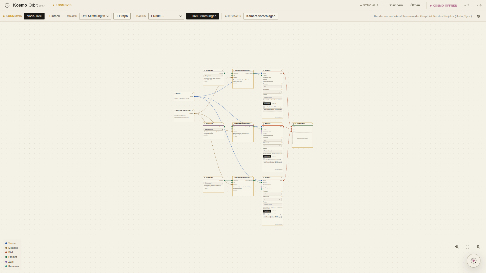
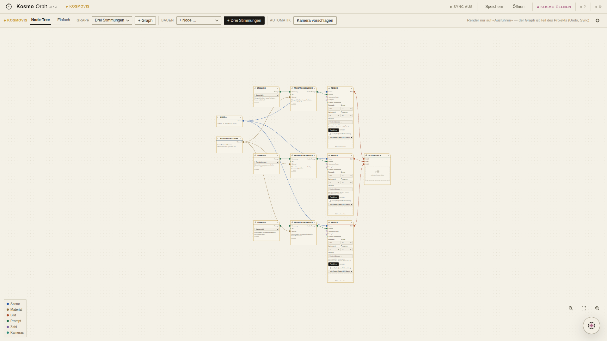
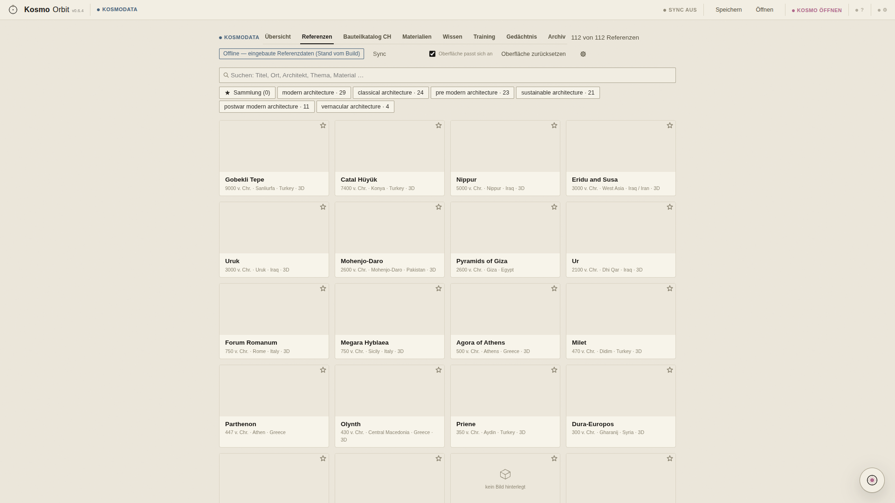
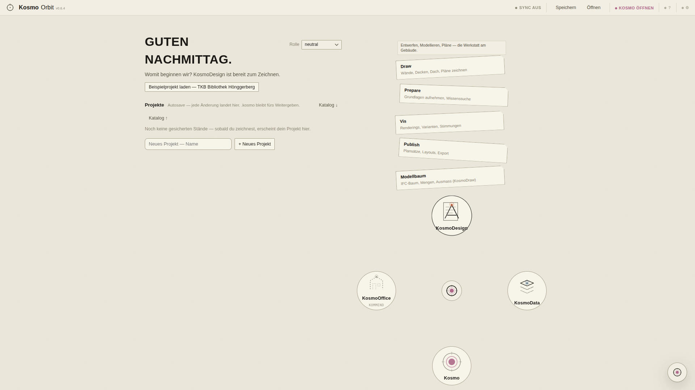
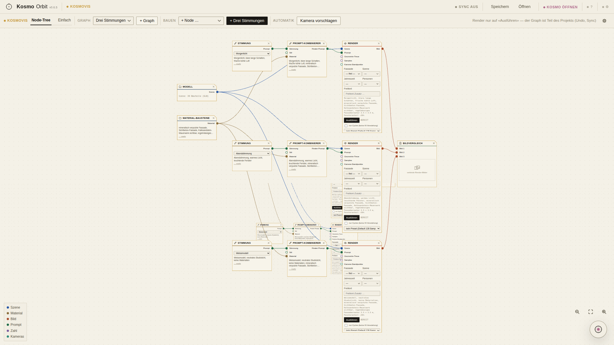

PDF im Reader öffnen (Adobe Acrobat, Microsoft Edge, Vorschau …).
Seite für Seite durchgehen — zuerst «Vorher / Nachher», dann je Seite eine Station oder Funktion.
Mit dem Kommentar-/Textwerkzeug direkt in die linierte Box schreiben: was stört, was fehlt, was anders soll. Auch Handschrift/Stift geht.
Das kommentierte PDF hier in den Chat zurückschicken.
Was diese Runde ist — und was mit deinen Notizen passiert
0.6.5 ist die Gesamtüberarbeitung der Oberfläche («Fable-Intelligenz-Tag»):
ein Guss statt Flickwerk — neue Abstands- und Schrift-Skalen, gestylte
Auswahlfelder/Tabs/Menüs/Dialoge/Chips, eine eigene Zeichen-Bibliothek mit
30 Tusche-Icons (die Emoji-Bedienelemente sind ersetzt), KosmoVis neu
gedacht (Kategorie-Zeichen, Zoom mit «Einpassen», Legende, Render-Formular
in Architektensprache), der KosmoDesign-Kopf entrümpelt, beschriftete
verletzte Zonen, Leerbild-Signete in KosmoData, aufgeräumte Zentrale und
Einstellungen — die elf Punkte stehen in neuigkeiten.ts
(Version 0.6.5). Dazu liefen zwei Runden maschineller Selbstkritik mit
Nachprüfung (11 blockierende + 12 sichtbare Befunde behoben, Restliste =
0.6.6-Arbeitsliste, siehe docs/UI-SELBSTKRITIK-065.md).
Seiten mit «NEU» zeigen, was seit dem 0.6.4-PDF dazugekommen ist; das
Kapitel «Vorher / Nachher» direkt nach dieser Seite stellt vier Umbauten
Bild gegen Bild. Deine Notizen zu diesem
PDF werden die 0.6.6-Auftragsliste.
Vorher / Nachher — was diese Runde umgebaut hat (1/2)
Vorher stapelten sich DREI Werkzeugzeilen übereinander (Werkzeuge, Export-Knopfreihe, Ansicht/Fähigkeiten). Neu: EINE Hauptzeile mit den Zeichenwerkzeugen plus eine Kontextzeile, in der der Export als aufklappbare gerahmte Gruppe lebt; die Geschossleiste ist eine gerahmte Karte am linken Rand, Statusleiste und Navigation teilen sich keine Ecke mehr. Ausserdem im neuen Bild sichtbar: die früher rätselhafte leere Zonenfläche im Plan trägt jetzt Name und Warnzeichen («⚠ Foyer / Ausleihe»).
KosmoVis — Node-Graph («Drei Stimmungen»)

Vorher — Kritik-Runde 1 (Morgen des 09.07.)

Nachher — 0.6.5 (Release-Stand)
Das Vorher-Bild ist der Stand vom Morgen: der neue Node-Look (Kategorie-Zeichen, Farbton, Legende) stand schon, aber die Kritik-Runde fand blockierende Befunde — die Zweitfelder des V-H4-Formulars (Fassade/Szene, Jahreszeit/Personen) waren am Kartenrand abgeschnitten, der aktive Tab war eine Vollfüllung statt eines Unterstrichs, Portbeschriftungen zu blass. Neu: die Formularfelder sitzen vollständig in zwei Spalten in der Karte, Tab mit Unterstrich, Portlabels in voller Tusche.
✍️ Verbesserungen / Befunde:
Vorher / Nachher — was diese Runde umgebaut hat (2/2)
KosmoData — Referenzkarten

Vorher — Kritik-Runde 1 (Morgen des 09.07.)Nachher — 0.6.5 (Release-Stand)
Vorher: Karten ohne Foto waren stumme leere Farbflächen — das gezeichnete Leerbild-Signet fehlte auf ~108 von 112 Karten (Kritik-Befund A8); «Sync» und «Oberfläche zurücksetzen» standen als nackte Textlinks neben einem doppelten Zahnrad. Neu: jede fotolose Karte trägt das Signet mit «kein Bild hinterlegt», Sync/Zurücksetzen/Stations-Einstellungen sind klare beschriftete Knöpfe, und die Karten heben sich über Linienstärke statt Schatten.
Zentrale — Orbit mit offenem Fächer

Vorher — Kritik-Runde 1 (Morgen des 09.07.)Nachher — 0.6.5 (Release-Stand)
Vorher schnitten die Werkzeug-Namen den Kreisrand (Kritik-Befund A6, «KosmoDesign» klebt im Kreis), in der Mitte kreiste ein unbeschrifteter Knoten mit dupliziertem Kosmo-Zeichen (A7), und «Katalog ↓ / Katalog ↑» waren verwirrende Textlinks im Fliesstext. Neu: die Titel sitzen frei UNTER den Kreisen, der Duplikat-Knoten ist weg, Katalog sichern/laden sind klare Knöpfe — der Fächer besteht weiterhin aus echten Karteikarten.
✍️ Verbesserungen / Befunde:
Erster Start — «Neu hier?»
Aus 0.6.3, Funktion unverändert diese Runde: beim allerersten Start fragt Kosmo in der Zentrale, ob ein Rundgang gewünscht ist. «Nein» heisst nie wieder — die Frage lässt sich über das «?» in der Kopfleiste jederzeit erneut auslösen.
✍️ Verbesserungen / Befunde:
Orbit-Startmenü — aufgeräumte Zentrale NEU
Das Orbit-Startmenü kam in 0.6.4; diese Runde hat es aufgeräumt: die Werkzeug-Namen sitzen jetzt UNTER den Kreisen statt darin (vorher schnitten sie den Kreisrand), der Fächer besteht aus echten Karteikarten mit Titel und Kurzbeschrieb (Extra-Bild: KosmoDesign mit Draw/Prepare/Vis/Publish/Modellbaum), «Katalog sichern/laden» sind klare Knöpfe statt ↓/↑-Textlinks, und der unbeschriftete Duplikat-Knoten in der Ringmitte ist entfernt. Die Fächer-Reserve ist statisch — beim Hover springt das Layout nicht mehr; die dadurch bleibende Leerfläche im Ruhezustand ist ein ehrlich dokumentierter 0.6.6-Punkt.
✍️ Verbesserungen / Befunde:
Kosmo — Symbol statt Dauerchat
Aus 0.6.3, Funktion unverändert diese Runde: Kosmo bleibt ein schwebendes Symbol statt eines dauerhaft offenen Panels. Hover zeigt ein Mini-Popup mit der letzten Aktivität, ein Klick entfaltet bei Bedarf das grosse Panel.
✍️ Verbesserungen / Befunde:
Einstellungs-Panel — gestalteter Dialog NEU
Die Einstellungen haben jetzt einen gestalteten Kopf mit Schliessen-Zeichen (gezeichnetes ✕ aus der neuen Icon-Bibliothek statt Emoji) und einen sichtbaren Scrollbalken — vorher scrollte der Inhalt zwar, wirkte aber hart abgeschnitten (Runde-2-Nachzügler). «Funktionen & Neues» führt die elf 0.6.5-Punkte zuoberst (mittleres Extra-Bild). Die Sektionen System (Deinstallieren, siehe letzte Seite), Darstellung (Farbpalette) und Leistung (rechtes Extra-Bild) bleiben inhaltlich wie in 0.6.4.
✍️ Verbesserungen / Befunde:
Werkzeug-Kurztasten + «?»-Übersicht
Aus 0.6.4 (F5/F9, «wie ArchiCAD»), Funktion unverändert diese Runde: «?» blendet die Kurzbefehl-Übersicht ein, der Abschnitt «Zeichnen» zeigt die Werkzeug-Kurztasten (A Auswahl, W Wand, Z Zone, V Volumen, D Dach, T Treppe, C Stütze, S Schnitt, F Freihand-Skizze) plus «Leertaste halten + ziehen» fürs Verschieben im 2D-Plan. Die Kurztasten wirken nie, solange ein Eingabefeld den Fokus hat.
✍️ Verbesserungen / Befunde:
KosmoDesign — entrümpelter Kopf NEU
Der Werkzeugkopf schrumpfte von drei gestapelten Zeilen auf EINE Hauptzeile (Zeichenwerkzeuge) plus eine Kontextzeile: der Export ist dort eine aufklappbare gerahmte Gruppe (im Bild offen: PDF/SVG/DXF/IFC …) und verdrängt Rückgängig/Wiederholen nicht mehr, die Geschossleiste ist eine gerahmte Karte am linken Rand, Statusleiste und Navigation teilen sich keine Ecke mehr. Ebenfalls neu und im Bild: die früher rätselhafte leere Zonenfläche im Plan trägt Name und Warnzeichen («⚠ Foyer / Ausleihe») und behält ihren Rahmen in jeder Zoomstufe. Der 4er-Splitscreen (Extra-Bild) bleibt unverändert nutzbar. Vergleich mit 0.6.4: Seite «Vorher / Nachher» vorne.
✍️ Verbesserungen / Befunde:
Masszahl am Cursor — «Zahlen zur Hand»
Aus 0.6.4 (F5), Funktion unverändert diese Runde: beim Zeichnen läuft eine Live-Masszahl am Cursor mit (hier «3.5 m ⏎» nach dem Tippen von «3.5»); Enter setzt den nächsten Punkt exakt in dieser Länge, ohne erneutes Raster-Snapping — die Zahl ist die Absicht.
✍️ Verbesserungen / Befunde:
Element-Fang — Fangpunkt-Marker beim Zeichnen
Aus 0.6.4 (F4), Funktion unverändert diese Runde: das Quadrat am Wandende ist der Fangpunkt-Marker (Typ «endpunkt»), er erscheint erst innerhalb des Fangradius und zieht den nächsten Klick exakt auf die Bauteilgeometrie statt aufs 250er-Raster. Ausserhalb des Radius bleibt der Marker weg — der Fang drängt sich nicht auf.
✍️ Verbesserungen / Befunde:
Plan-LOD — Detailstufe aus der Distanz
Aus 0.6.3, unverändert diese Runde: nah dran (links) zeigt Bemassung, Raster und Möbel; weit weg (rechts) bleiben nur Poché und Fenstersymbole. Reine Anzeige-Umschaltung, der Plansatz-Export bleibt unverändert.
✍️ Verbesserungen / Befunde:
Skizzieren — drei Annäherungen
Aus 0.6.3, unverändert diese Runde: ein Freihand-Strich im Skizzieren-Modus ergibt am Übergabe-Moment drei Karten (u.a. eine orthogonalisierte Variante), als EIN atomarer Undo-Schritt.
✍️ Verbesserungen / Befunde:
Kosmo-Vorschlagskarte — mit Vorschau
Aus 0.6.3, unverändert diese Runde: die Diff-Karte zeigt einen Vorher/Nachher-Mini-Grundriss statt nur Text — ehrlich nur dort, wo die Vorschau tatsächlich berechenbar ist.
✍️ Verbesserungen / Befunde:
Phasen-Presets — Angebot, nie stumm
Aus 0.6.3, unverändert diese Runde: wechselt die SIA-Teilphase, bietet Kosmo passende Fähigkeits-Icons als Fokus an. «Nicht jetzt» lässt alles unverändert.
✍️ Verbesserungen / Befunde:
KV-Grobschätzung
Aus 0.6.3, Funktion unverändert diese Runde: Richtwert-Kostenvoranschlag auf GF-Basis mit stets sichtbarem Ehrlichkeits-Hinweis («kein Devis, keine NPK-Positionen»).
✍️ Verbesserungen / Befunde:
Bauablaufplan
Aus 0.6.3, Funktion unverändert diese Runde: abgeleiteter Grob-Terminplan mit fester Gewerke-Reihenfolge, Export als druckfähiges SVG-Blatt. Hinweis «ersetzt keine Bauleitung» steht permanent im Panel.
✍️ Verbesserungen / Befunde:
Mängel & Abnahme
Aus 0.6.3, Funktion unverändert diese Runde: Mängel erfassen, Status umschalten, Abnahmeprotokoll als SVG exportieren — kein rechtsgültiges SIA-118-Protokoll.
✍️ Verbesserungen / Befunde:
Baugesuch-Blattsatz — Publish in der neuen Sprache NEU
Funktion aus 0.6.3 unverändert: ein Klick erzeugt mehrere Blätter plus ein Set «Baugesuch»; fehlende Grundlagen werden als ehrliche Lücken-Meldung benannt statt eines stillen Teilerfolgs. NEU 0.6.5: KosmoPublish spricht dieselbe Formensprache wie die übrigen Stationen — eine klare Knopf-Hierarchie statt dreier konkurrierender Füllflächen (Baugesuch/Plansatz PDF/Blatt füllen), gerahmte Export-Gruppen, und das Set-Namensfeld schneidet seinen Platzhalter nicht mehr ab (Kritik-Befund A10).
✍️ Verbesserungen / Befunde:
Blatt füllen
Aus 0.6.3, Funktion unverändert diese Runde: platziert Grundriss, Axonometrie, Kennzahlen-Textblock und Render-Platzhalter atomar und meldet ehrlich, was im Modell fehlt.
✍️ Verbesserungen / Befunde:
KosmoVis — Node-Graph neu gedacht NEU

Der Node-Editor wurde grundüberholt: jeder Node trägt ein Kategorie-Zeichen und einen Farbton, lange Texte klappen («… mehr») statt überzulaufen, die Zoom-Knöpfe unten rechts haben ein «Einpassen», und die Legende unten links erklärt die Anschlussfarben (Szene, Material, Bild, Prompt, Zahl, Kameras). NEU auch «Rendern in Architektensprache»: der Render-Node fragt Fassade, Szene, Jahreszeit und Personen als Formular ab (V-H4) — der daraus gebaute Prompt bleibt als Text im Node sichtbar, nichts passiert im Verborgenen. Das Bild zeigt den Zustand nach «+ Drei Stimmungen» (Morgenlicht/Abendstimmung/Weissmodell) samt der Default-Kette und dem Bildvergleich-Node. Ehrlicher Befund im Bild: wo die Default-Kette und die dritte Stimmungs-Kette zusammenstossen, überlagern sich Karten noch — Mehrfachauswahl/Ausrichten im Node-Editor steht auf der 0.6.6-Liste.
Aus 0.6.3/0.6.4, Funktion unverändert diese Runde: «Kamera vorschlagen» erzeugt Kamera-Standpunkte, Cycles-Presets wählen die Render-Qualität, «Ausführen» schickt den Job an die (hier Fake-)Bridge — das Ergebnisbild hängt am Render-Node. Der 0.6.4-Auto-Fit beim Öffnen bleibt.
✍️ Verbesserungen / Befunde:
Materialbibliothek — Würfel-Vorschau
Aus 0.6.3, Funktion unverändert diese Runde: jedes Material zeigt einen 3D-Würfel (echte Canvas-Vorschau), echte Dimensionen und eine Pflicht-Quelle. Die Werkzeugzeile der Asset-Station folgt neu der gemeinsamen 0.6.5-Formensprache.
✍️ Verbesserungen / Befunde:
KosmoData — Leerbild-Signete statt leerer Flächen NEU
KosmoData zeigt Ehrlichkeit jetzt auch im Bild: Referenzkarten ohne hinterlegtes Foto tragen ein gezeichnetes Signet mit «kein Bild hinterlegt» statt einer leeren Farbfläche (vorher fehlte das Signet auf ~108 von 112 Karten), und Karten heben sich über Linienstärke statt Schatten. Sync, «Oberfläche zurücksetzen» und die Stations-Einstellungen sind klare beschriftete Knöpfe. Der ehrliche Offline-Badge («Offline — eingebaute Referenzdaten, Stand vom Build») bleibt aus 0.6.4. Rechtes Extra-Bild: der CH-Bauteilkatalog unter demselben Dach.
✍️ Verbesserungen / Befunde:
KosmoDev — Auftragsbuch
Funktion unverändert diese Runde: deine Aufträge an die Software-Werkstatt erfassen, priorisieren, als Workorder exportieren — genau hier landen auch deine Notizen aus diesem PDF. Die Werkzeugzeile folgt neu der gemeinsamen Formensprache (ein Primärknopf je Bereich).
✍️ Verbesserungen / Befunde:
KosmoPrepare / KosmoDoc / KosmoTrain
Wissens-Ingest, Diagnose/Hilfe/Berichte und Kosmos Lernstand mit Kuration — Funktion unverändert diese Runde. NEU 0.6.5 an allen dreien: dieselbe Formensprache wie überall (ein Primärknopf je Bereich, gerahmte Export-Gruppen, gezeichnete Leerzustände statt leerer Flächen, gruppierte Werkzeugzeilen). Der Doc-Tab «Tech-Radar» hat eine eigene Seite (nächste Seite).
✍️ Verbesserungen / Befunde:
KosmoDoc — Tech-Radar
Aus 0.6.4, Inhalt unverändert diese Runde: worauf die Software technisch steht (Adopt/Selbst/Reject je Baustein) und was noch beobachtet wird, in einer kuratierten Liste (mind. 20 Posten). Einträge aus dem Notion-Scan sind ehrlich mit ⚠ markiert, weil noch nicht selbst verifiziert — verifizierter Bestand (z.B. camera-controls) trägt kein Warnzeichen.
✍️ Verbesserungen / Befunde:
KosmoDraw — Modellbaum · Mengen · Ausmass
Aus 0.6.3/0.6.4, Funktion unverändert diese Runde: Mengen, Ausmass und Berechnungsliste aus dem Modell; daneben KosmoSketch fürs freie Zeichnen (Extra-Bild), dessen «Übergeben»-Knopf seit dem 0.6.4-Fix frei liegt.
✍️ Verbesserungen / Befunde:
Umbau — Bestand / Abbruch / Neu
Bestand einheitlich grau, kein Diagonalkreuz, SIA-saubere Umbau-Blätter — aus 0.6.2, unverändert diese Runde.
✍️ Verbesserungen / Befunde:
Volumenstudien — Zonenregel-gespeist
Zonenregel speist die Studie, Geschosshöhe mit Herkunft, Besonnungs-Richtwert und Raumprogramm-Erfüllung je Extremvariante — aus 0.6.1/0.6.2, unverändert diese Runde.
✍️ Verbesserungen / Befunde:
Grundlagenstudie-Bericht
Empfehlung mit Begründung zuerst, dann die Vergleichstabelle mit echten Zahlen, dann die Grenzen der Studie als eigener Block — aus 0.6.2, unverändert diese Runde.
✍️ Verbesserungen / Befunde:
Unternehmerplan — ehrlicher PDF-Pfad
Datei ins Fenster ziehen genügt; ein hochgeladenes PDF wird ehrlich erkannt statt in den DXF-Import zu laufen — aus 0.6.1/0.6.2, unverändert diese Runde.
✍️ Verbesserungen / Befunde:
Claude-Modellwahl
Aus 0.6.4 (F1), Funktion unverändert diese Runde: im Kosmo-Panel (Zahnrad → Betriebsart Cloud) steht ein Modell-Select mit den aktuellen Claude-Modellen (Opus 4.8 als Owner-Default, Sonnet, Haiku) plus Freitext-Override — die Wahl übersteht einen Reload. Fehlt die Anthropic-CLI für die Abo-Anmeldung, erklärt ein bleibender Hinweis Installation und den API-Schlüssel-Weg.
✍️ Verbesserungen / Befunde:
App deinstallieren — in den Einstellungen
Aus 0.6.4 (F2, «eine Funktion, ein Ort»), Funktion unverändert diese Runde: der Einstieg wohnt nur in den Einstellungen (Sektion «System»). Der Dialog bleibt ehrlich: KosmoOrbit kann sich als Tauri-App nicht selbst deinstallieren, das Panel zeigt die OS-Kurzanleitung (Windows/macOS/Linux) und den Link auf die Website.